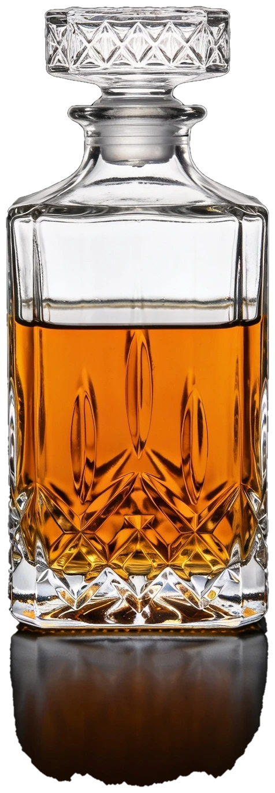
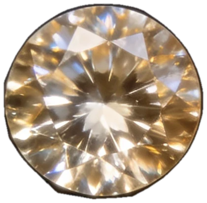

UNAS PALABRAS
“Cuarenta años merecen celebrarse con calma: un buen vaso en la mano, la música bajita y la gente que ha caminado conmigo. Me encantaría que estuvieras ahí.”
— Andrés

La noche
Una mesa larga de nogal entre libros, luz de velas y vasos que suenan a cristal.

LA CATACata guiada de cuatro single malts
LA CENACortes finos y pastel de chocolate amargo
LA MÚSICATrío de jazz en vivo hasta tarde
Dónde
Itinerario
- Coctel de bienvenida
- Cata guiada
- Cena
- Brindis y pastel
- Jazz y buena plática
Vestimenta
FORMAL OSCURO
Saco obligatorio, corbata opcional. Cafés profundos, azul marino y negro.
Confirma
ESTA INVITACIÓN ES PARA
2 personasPor favor confírmame antes del 20 de agosto de 2027.